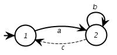
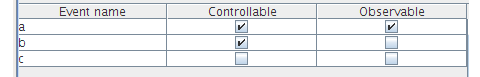

There are two types of files in the IDES filesystem. One has the extention .xmd and contains informations regarding DES models, the other has extention .xwd and regards sets of DES models called workspaces.
The two types will be explained in the subsequent sections.
The XML data in a IDES file, must conform to the following DTD:
<!ELEMENT model (data,meta*>
<!ATTLIST version #REQUIRED, type #REQUIRED, id #REQUIRED>
<!ELEMENT data(state*,event*,transition*)>
<!ELEMENT meta(ANY)>
<!ATTLIST tag #REQUIRED, version #REQUIRED>
Although it can support representation for multiple kinds of discrete event systems, IDES has a default support for finite states automata (from now on called FSA in this text).
The implementation of the file format for a FSA is as described by the following Document Type Definition (DTD):
<!ELEMENT model (data*,meta*)>
<!ATTLIST version #REQUIRED, type #REQUIRED, id #REQUIRED>
<!ELEMENT data(state*,event*,transition*)>
<!ELEMENT meta(font, state*,transition*)>
<!ATTLIST tag #REQUIRED, version #REQUIRED>
<!ELEMENT state (name,properties,ANY)>
<!ATTLIST state id ID #REQUIRED>
<!ELEMENT event (name,properties,ANY)>
<!ATTLIST event id ID #REQUIRED>
<!ELEMENT transition ANY>
<!ATTLIST transition id ID #REQUIRED
source IDREF #REQUIRED
target IDREF #REQUIRED
event IDREF #IMPLIED
group #CDATA>
<!ELEMENT name (#PCDATA)>
<!ELEMENT properties (initial?,marked?,
observable?,controllable?,ANY)>
<!ELEMENT initial EMPTY>
<!ELEMENT marked EMPTY>
<!ELEMENT observable EMPTY>
<!ELEMENT controllable EMPTY>
<!ELEMENT circle EMPTY>
<!ATTLIST circle x CDATA #REQUIRED
y CDATA #REQUIRED
r CDATA #REQUIRED>
<!ELEMENT bezier EMPTY>
<!ATTLIST bezier x1 CDATA #REQUIRED
y1 CDATA #REQUIRED
ctrlx1 CDATA #REQUIRED
ctrly1 CDATA #REQUIRED
ctrlx2 CDATA #REQUIRED
ctrly2 CDATA #REQUIRED
x2 CDATA #REQUIRED
y2 CDATA #REQUIRED>
<!ELEMENT arrow EMPTY>
<!ATTLIST arrow x CDATA #REQUIRED
y CDATA #REQUIRED>
<!ELEMENT label EMPTY>
<!ATTLIST label x CDATA #REQUIRED
y CDATA #REQUIRED
group CDATA #IMPLIED>
Consider a simple FSA model, with two states and three transitions (Figure 1).

Figure 1. A simple model created using IDES
The layout of some graph elements like edges and nodes, can be modified at the user's will though it does never reflect on the structure of the model.
All the information regarding only the structure of the model itself is named "data", all the rest is named "metadata". As metadata one can refer to information regarding the visual representation of a graph or even binary-data that may be needed to be stored, representing some aspect of a model.
As said before, the file that represents models in IDES are xml structured files that has .xmd as extention. The first line of such a file tells information about xml version and character encoding.
A file that displays a model like the one shown in the figure 1 was created using the version 2.1 of IDES and has as the first line the following information:
<?xml version="1.0" encoding="UTF-8"?>
version indicates the XML version used.encoding indicates the encoding of the file. It must be UTF-8.At the second line starts the model field that contains information about the version of IDES under which the model was created, it also has informations about the DES type and an "id" for the model.
Every file must have the model field.
<model version="2.1" type="FSA" id="model">
version indicates the version of the file format.type indicates the type of DES system represented by the model. Currently, only "FSA" is supported.id is mandatory but deprecated. Its value is not used.NOTE: Future development of IDES may introduce DES models different from "FSA". Any software processing IDES files must check to see what is the content of the "type" attribute.
The field with the word "data" as a tag is the minimal set of informations needed to represent a DES model, it does not hold any informations about, for example, visual representation of a model. A model must have just one occurrence of such a field.
The tag <data> does not have any attributes. The data field, according to the xml convention starts with the opening tag <data> and finishes when the file hits the enclosing </data>. As for a FSA model, the data field contains three internal fields: state, event and transition.
Example of the data field for the FSA model shown in Figure 1:
<data>
<state id="1">
<properties>
<initial />
</properties>
<name>1</name>
</state>
<state id="2">
<properties>
<marked />
</properties>
<name>2</name>
</state>
<event id="1">
<properties>
<controllable />
<observable />
</properties>
<name>a</name>
</event>
<event id="2">
<properties>
<controllable />
</properties>
<name>b</name>
</event>
<event id="3">
<properties />
<name>c</name>
</event>
<transition id="1" source="1" target="2" event="1">
</transition>
<transition id="2" source="2" target="1" event="3">
</transition>
<transition id="3" source="2" target="2" event="2">
</transition>
</data>
As one can see, there are three different tags inside the data field.
<state> contains the mandatory attribute id which represents internally the state. There can be many of these tags in a FSA model file but all ids have to be unique. There are, for an FSA, two internal tags for a state: <properties> and <name>.
<properties> holds aditional information needed to fully represents a state. At the moment this document was written, the supported properties for a state were "initial" or "marked". The <properties> tag is mandatory and has to be present even if a state is neither marked nor initial. Its simpler form would be the self-enclosing: <properties/> for such a state. In the example, there are two states in the model. Both are either initial or marked. The currently supported properties for a state in FSA models, are <initial/> and <marked/>. The possible fields describing the properties of a state are:
<properties>
<initial/>
</properties>
<properties>
<marked/>
</properties>
<properties>
<initial/>
<marked/>
</properties>
<properties/>
<name> has the text which appears as a label for the state.<event> contains the usual (and mandatory) property id that internally identifies the event. There are, for an FSA, two mandatory tags for <event>: properties and name. There can be many event tags in a FSA model file but all ids have to be unique.
<properties> there are currently two supported properties for an event: <controllable/> and <observable/>. The possible fields describing the properties of an event are:
<properties>
<controllable/>
</properties>
<properties>
<observable/>
</properties>
<properties>
<controllable/>
<observable/>
</properties>
<properties/>
<name> contains the name of the event.<transition> this tag has four attributes and no internal tags. The properties are: id, source, target and event. There can be many of these tags in a FSA model file but all ids have to be unique.
id is an unique internal representation for a transition.source points to the id of the source state of a transition.target points to the id of the target state of a transition.event points to the event that triggers the transition. This attribute is not mandatory. If it is missing, no event will be assigned to the transition. Example: <transition id="3" source="2" target="2" event="2">
There can be many meta fields inside a file, the meta field must contain all the information that does not belong to the minimal set of information necessary to represent a DES model. As for the type of data that can be stored inside a meta field, it can vary from regular XML structures, to binary data. Any relevant information can be stored between <meta> and </meta>. Each <meta> filed must have two attributes: * The attribute tag indicates the type of data stored in the meta section. * The attribute version indicates the version of the format in the meta section.
NOTE: "Meta" sections are entirely optional. IDES will load a model file without any "meta" sections. Furthermore, there can be multiple "meta" sections in a single file as long as they have unique "tag" attributes. These sections are not guaranteed to contain valid XML data (for example, they may contain binary data). Any software processing IDES files must be able to handle any number of "meta" sections and has to check to see what is the content of the "tag" attributes to determine if a given section is of interest.
In the current implementation of IDES, only a single meta section is saved in the file. It is the section describing the graphical layout of the FSA model and the tag attribute is "layout". Layout information may be missing if the FSA model is very large and has never been laid out.
The model used as example contains the following metadata field:
<meta tag="layout" version="2.1">
<font size="12"/>
<layout uniformnodes="false"/>
<state id="1">
<circle r="18.0" x="69.0" y="91.0" />
<arrow x="36.0" y="0.0" />
</state>
<state id="2">
<circle r="18.0" x="217.0" y="92.0" />
<arrow x="1.0" y="0.0" />
</state>
<transition id="1">
<bezier x1="69.0" y1="91.0" x2="217.0" y2="92.0" ctrlx1="111.89058685302734" ctrly1="66.62200927734375" ctrlx2="174.4427490234375" ctrly2="67.0446548461914" />
<label x="5.0" y="5.0" />
</transition>
<transition id="2">
<bezier x1="217.0" y1="92.0" x2="69.0" y2="91.0" ctrlx1="174.10940551757812" ctrly1="116.37799072265625" ctrlx2="111.5572509765625" ctrly2="115.9553451538086" />
<label x="5.0" y="5.0" />
</transition>
<transition id="3">
<bezier x1="217.0" y1="92.0" x2="217.0" y2="92.0" ctrlx1="166.08831787109375" ctrly1="41.088314056396484" ctrlx2="267.91168212890625" ctrly2="41.088314056396484" />
<label x="-3.0" y="-17.0" />
</transition>
</meta>
<font> specifies the font size to be used in the model. At this time IDES does not support font sizes, so this field is not interpreted.<layout> contains the attribute uniformnodes which can be "true" or "false". If it is "true", all nodes in the graph will have the same size (the maximum node size in the model). This option is settable by the user in the interface.<state> contains the elements needed for a conventional visual description of a state. The mandatory attribute id is there to identify the state being represented. There must be exactly one of these tags for each state described in the <data> field. There are, for an FSA, two internal tags for a state: <arrow> and <circle>.
<circle> contains the location of a state-representation in a graph. It follows the common computer graphics convention of having the pair (x,y) = (0,0) at the top-left side of the screen. This tag also contains the radius of the node.
r is the radius of the node.x is the x coordinate of the node in the graph.y is the y coordinate of the node in the graph.<arrow> contains the coordinates for the directional vector that tells the direction of the initial arrow. This tag is required for every state, however, it is only used when the arrow belongs to the representation of an initial state. It contains two mandatory attributes which give the angle at which the arrow approaches the node.
x is the x coordinate of the vector of approach (assuming that the centre of the node is 0,0).y is the y coordinate of the vector of approach (assuming that the centre of the node is 0,0).<transition> contains information about visual representation of a transition. It contains the mandatory attributes id, and group.
id which points to the represented transition.group is an optional numeric value that is used when more than one transition is to be represented in the graph, by the same edge. All transitions with the same group number will be shown as a single edge (with multiple events in the label).<label> and <bezier>:<label> contains information about location of a label containing the name of an event (or the group of events if transitions are grouped) in the graph. It contains two attributes, x and y.
x is the x coordinate of the label in the graph.y is the y coordinate of the label in the graph.<bezier> contains the information needed to represent an edge as a bezier curve. A bezier curve contains 4 points, so this tag contains 8 attributes (corresponding to the coordinates of the control points, as shown in the figure) and no subtags.x1, the x coordinate for the point p1 in the graph.y1, the y coordinate for the point p1 in the graph.x2, the x coordinate for the point p2 in the graph.y1, the y coordinate for the point p2 in the graph.ctrlx1, the x coordinate for the point ctrl1 in the graph.ctrly1, the y coordinate for the point ctrl1 in the graph.ctrlx2, the x coordinate for the point ctrl2 in the graph.ctrly2, the y coordinate for the point ctrl2 in the graph.As said before, files with the extention xwd represent a set of DES files and is defined according to the following DTD:
<!ELEMENT workspace (model*) >
<!ATTLIST version #REQUIRED>
<!ELEMENT model EMPTY>
<!ATTLIST file #REQUIRED, position #REQUIRED, selection #IMPLIED>
A simple example of a workspace file with two models is given in the following box:
<?xml version="1.0" encoding="UTF-8"?>
<workspace version="2.1">
<model file="model.xmd" position="0" selected="true"/>
<model file="model2.xmd" position="1"/>
</workspace>
<workspace> contains the mandatory attribute version which indicates the version of IDES that has built the file.
version is the mandatory attribute that contains the version of IDES in which the file was created.<model> contains three mandatory attributes and no subfields. It has information about the files containing the DES models present in the workspace.
file contains a path (in relation to the workspace file) for a model file.position tells the position of the model in a sequence of models. (In IDES the position is related to where, in the filmstrip, a model is shown).selected, it can be "true" or "false" and indicates which model is selected when the workspace is loaded. When omitted, it is assumed to be "false". Only one model can have this attribute set to "true".